Ernie Johnson Sr. pitched for the Milwaukee Braves in the '50s, then spent decades as the voice of Braves baseball. Ernie Johnson Jr. grew up around that booth and took the family trade to basketball, becoming the heart of Inside the NBA. One name, two games — seventy years of cardboard between them.
Ernie Johnson Sr.1953 Johnston Cookies #7 · Milwaukee Braves
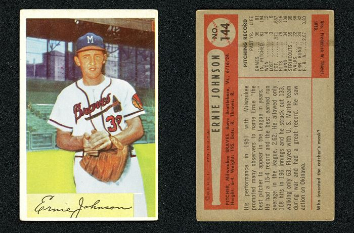
Ernie Johnson Sr.1954 Bowman #144 · Milwaukee Braves
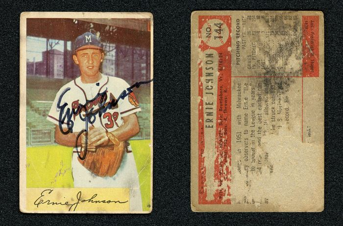
Ernie Johnson Sr.1954 Bowman #144 · Milwaukee Braves
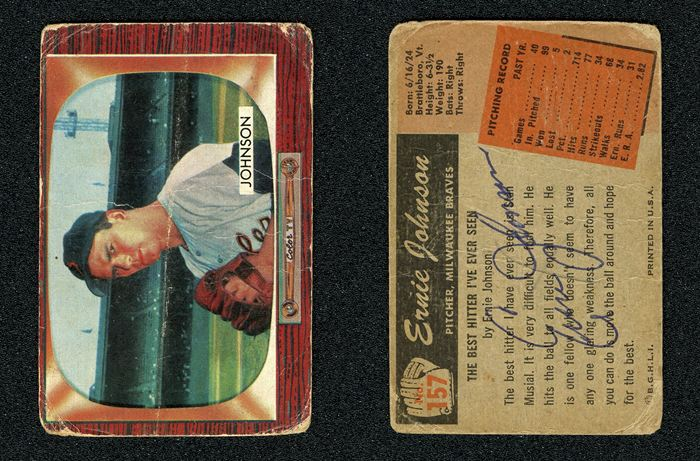
Ernie Johnson Sr.1955 Bowman ERR (Don Johnson Picture on Front) #157 · Milwaukee Braves
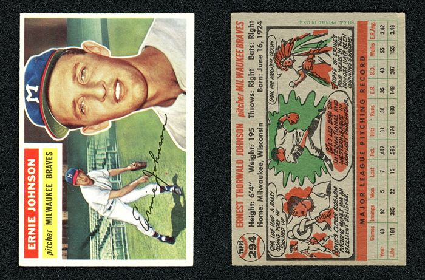
Ernie Johnson Sr.1956 Topps #294 · Milwaukee Braves
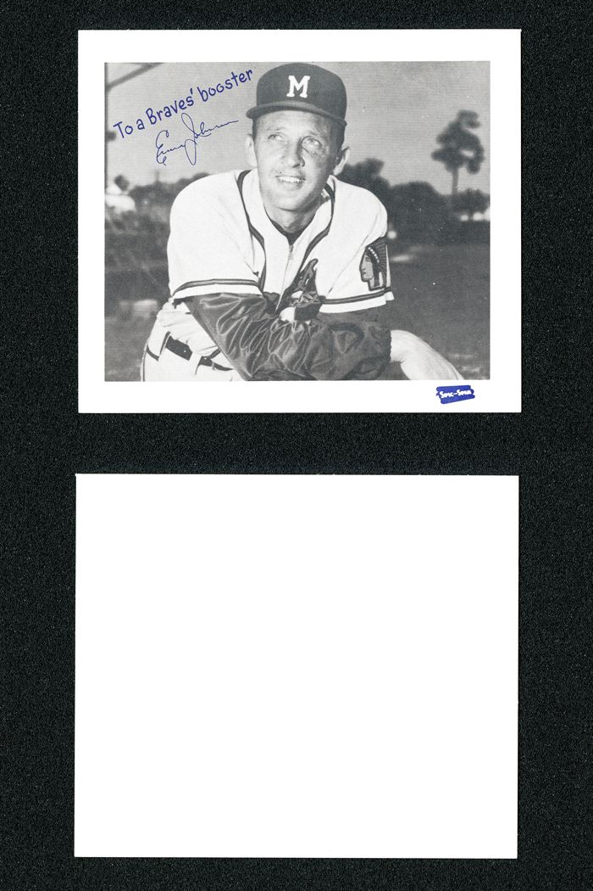
Ernie Johnson Sr.1957 Spic and Span Postcards (4" x 5") #NNO · Milwaukee Braves
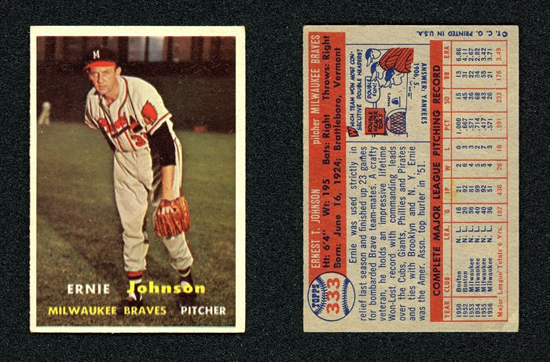
Ernie Johnson Sr.1957 Topps #333 · Milwaukee Braves
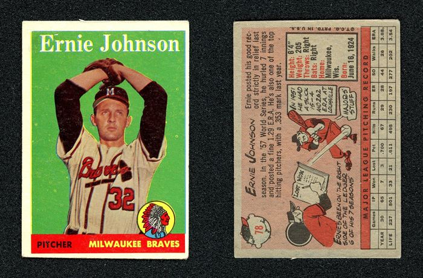
Ernie Johnson Sr.1958 Topps (Name in White Letter) #78 · Milwaukee Braves
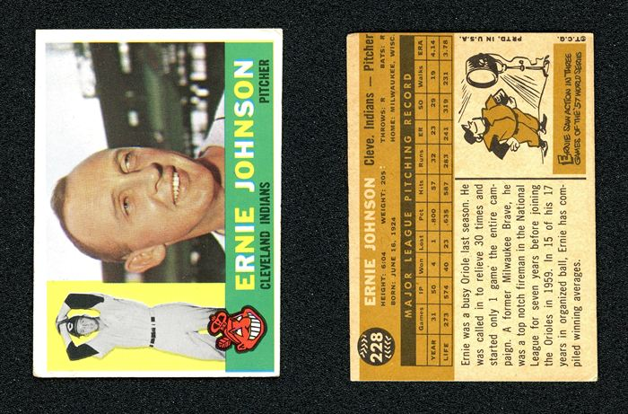
Ernie Johnson Sr.1960 Topps #228 · Cleveland Indians
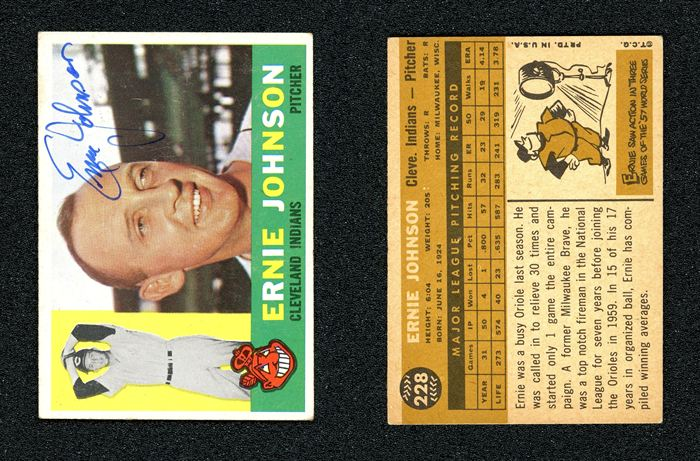
Ernie Johnson Sr.1960 Topps #228 · Cleveland Indians
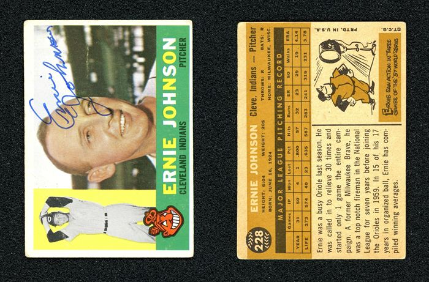
Ernie Johnson Sr.1960 Topps #228 · Cleveland Indians
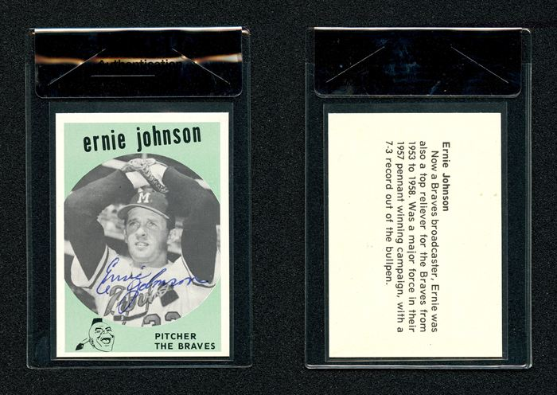
Ernie Johnson Sr.1978 Atlanta Sports Collectors Convention (Nobis Center Benefit) #NNO · Milwaukee Braves
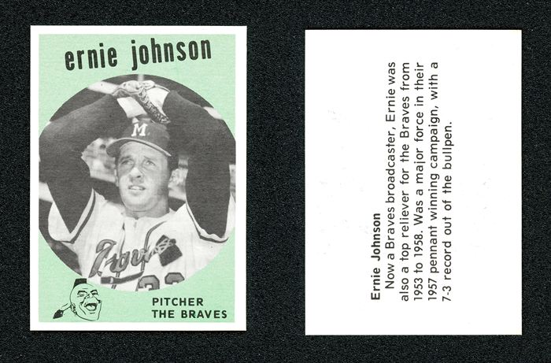
Ernie Johnson Sr.1978 Atlanta Sports Collectors Convention (Nobis Center Benefit) #NNO · Milwaukee Braves
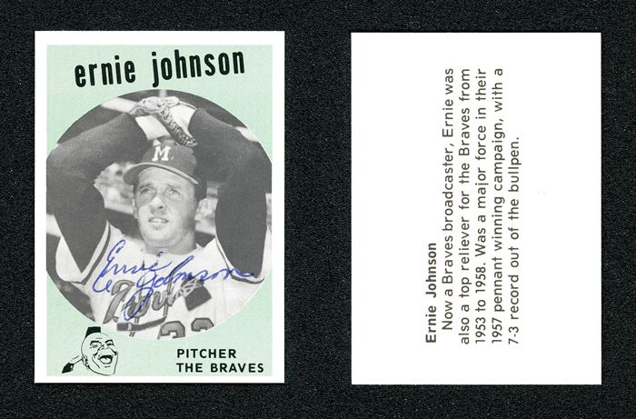
Ernie Johnson Sr.1978 Atlanta Sports Collectors Convention (Nobis Center Benefit) #NNO · Milwaukee Braves